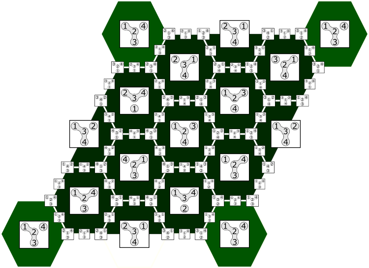

Help with this presentation. |
Go to Start (closes Help) |
- Press "h" to show/hide this help screen.
- Use left and right arrows to switch between slides horizontally.
- In some slides you can press down/up arrows to see vertical slides with additional info (references, problems, memes, philosophy, etc.).
- I would recommend to view the horizontal content at the first round of the hermeneutic circle. You can explore the additional vertical content later.
- Anyway, if you press space you'll move authomatically through all slides including vertical.
- You can certainly use cursor and click on arrows in down right corner. This is your option if you hold a touchscreen.
- Press Esc to enter overview mode and browse the slides. In the overview mode, click on a slide to open it.
- Some slides contain interactive elements. The hints will be written there.
- Remember, you can use Tab or cursor to switch between input forms.
- If something goes wrong, you can always reload the page. It is basically an html-page. If nothing works, then probably Javascript is disabled in your browser.
- "The only good bug is a dead bug!". Tell me about bugs, seriously.
- Now "the running letters effect" is enabled <-click to change.
| Enjoy your time! Press to close. | The source code lies on GitHub. |
Matrix Odyssey:
from computational algebra to toric topology and back.
Anton Ayzenberg ayzenberga/at/gmail.com
based on joint works with V.Buchstaber, V.Cherepanov, M.Masuda, G.Solomadin, K.Sorokin.
 |
 |
||||
| A.Ayzenberg | V.Buchstaber | V.Cherepanov | M.Masuda | G.Solomadin | K.Sorokin |
Matrix rank computation:
Computation of simplicial homology reduces to this problem. It is important elsewhere.
In many cases matrices are sparse. We would like to have diagonalization algorithms for particular sparseness types.
References (to be added):
- Alain Cosnuau, Computation on GPU of Eigenvalues and Eigenvectors of a Large Number of Small Hermitian Matrices, Procedia Computer Science 29 (2014), 800--810.
Graphs and matrix shapes.
- Let $[n]=\{1,\ldots,n\}$. Let $\Gamma$ be a graph with vertex set $[n]$ and edge set $E_\Gamma$.
- Let $M_n$ be the set of all symmetric real matrices of size $n$.
- A matrix $A\in M_n$ is called $\Gamma$-shaped if $a_{i,j}=0$ for $\{i,j\}\notin E_\Gamma$.
- Let $M_\Gamma$ be the set of all $\Gamma$-shaped matrices
| $\Rightarrow$ | \[ \begin{pmatrix} \ast & \ast & \ast & \ast \\ \ast & \ast & & \\ \ast & & \ast & \\ \ast & & & \ast \end{pmatrix} \] | |
| Star graph | Arrowhead matrix |
 |
$\Rightarrow$ | \[ \begin{pmatrix} \ast & \ast & \ast & \ast \\ \ast & \ast & \ast & \ast \\ \ast & \ast & \ast & \ast \\ \ast & \ast & \ast & \ast \end{pmatrix} \] |
| Full graph | Full matrix |
| $\Rightarrow$ | \[ \begin{pmatrix} \ast & \ast & & \\ \ast & \ast & \ast & \\ & \ast & \ast & \ast \\ & & \ast & \ast \end{pmatrix} \] | |
| Path graph | Tridiagonal matrix |
| $\Rightarrow$ | \[ \begin{pmatrix} \ast & \ast & & & \ast\\ \ast & \ast & \ast & & \\ & \ast & \ast & \ast & \\ & & \ast & \ast & \ast \\ \ast & & & \ast & \ast \end{pmatrix} \] | |
| Cycle graph | Periodic tridiag- onal matrix |
- Let $\lambda=(\lambda_1<\cdots<\lambda_n)$ be a simple spectrum.
- Let $M_\lambda$ be the set of all matrices with spectrum $\lambda$.
- Let $M_{\Gamma,\lambda}=M_\Gamma\cap M_\lambda$ be the set of all $\Gamma$-shaped matrices with spectrum $\lambda$.
- Sard's lemma: if $\lambda$ is generic, then $M_{\Gamma,\lambda}$ is a smooth closed manifold.
- $\dim M_{\Gamma,\lambda}=|E_\Gamma|$.
References:
- [Tridiagonal matrices] C.Tomei, The topology of isospectral manifolds of tridiagonal matrices, Duke Math.Journal, Vol.51:4 (1984).
- [Tridiagonal matrices] A.M.Bloch, R.W.Brockett, T.S.Ratiu, A new formulation of the generalized Toda lattice equations and their fixed point analysis via the momentum map, Bull. Amer. Math. Soc. (N.S.) 23:2 (1990), 477-485.
- [Tridiagonal with zero diagonal] A.V.Penskoi, Integrable systems and the topology of isospectral manifolds, Theoret. and Math. Phys., 155:1 (2008), 627–632.
- [Staircase matrices] F.De Mari, M.Pedroni, Toda flows and real Hessenberg manifolds, J. Geom. Anal., 9:4 (1999), 607-625.
- [Staircase matrices] A.A.Ayzenberg, V.M.Buchstaber, Manifolds of isospectral matrices and Hessenberg varieties, Int. Math. Res. Notices 2021:21 (2021), 16671-16692.
- [Periodic tridiagonal matrices] A.Ayzenberg, Space of isospectral periodic tridiagonal matrices, Algebr. Geom. Topol. 20 (2020), 2957-2994.
- [Arrowhead] A.A.Ayzenberg, V.M.Buchstaber, Manifolds of isospectral arrow matrices, Sbornik: Mathematics 212:5 (2021), 3-36.
Suggestions:
QR-algorithm:
| Original matrix: |
|
At each step we represent a matrix $A_i$ as $Q\cdot R$ and take $A_{i+1}=R\cdot Q$. Here $Q$ is orgthogonal, $R$ is upper triangular. |
|
Fill in the matrix above. Press "u" to upload. Press "q" to make QR step. After 0 iterations: |
|
- QR-algorithm preserves spectrum and symmetricity.
- QR-algorithm is a cascade generated by a diffeomorphism $D_{QR}\colon M_\lambda\to M_\lambda$.
- For almost any initial matrix $A$, the limit $\lim_{k\to\infty}D_{QR}^k(A)$ is a diagonal matrix.
- QR-algorithm preserves staircase form of a matrix. So $D_{QR}$ is a dynamical system on the manifold of staircase matrices.
References:
- [General book] G.H.Golub, C.F.Van Loan. Matrix Computations (3rd ed.). 1996. Baltimore: Johns Hopkins University Press.
Suggestions:
Tell me, if you know one.
Flow of full symmetric Toda lattice:
- Toda flow is a dynamical system with continuous time.
- $\dot{A}=[A,P(A)]$, where $P(A)$ is antisymmetrization of $A$.
|
This matrix is defined earlier. Press "u" to reload. Hold "t" to run Toda flow. Time: 0 seconds: |
|
- Toda flow preserves spectrum and symmetricity.
- This is a dynamical system on the manifold $M_\lambda$.
- If $A(t)$ is a solution, then for generic initial matrix $A(0)$, the limit $\lim_{t\to\infty}A(t)$ is a diagonal matrix.
- Toda flow preserves staircase form of a matrix.
- Toda flow on $M_\lambda$ is a Morse gradient flow of a function $f\colon M_\lambda\to \mathbb{R}$, where \[ f(A)=a_{1,1}+2a_{2,2}+\cdots+na_{n,n} \] (generic linear function of the main diagonal).
References:
- [Open Toda lattice, dynamical] J. Moser, Finitely many points on the line under the influence of an exponential potential - an integrable system, in Dynamical Systems, Theory and Applications, Lecture Notes in Physics, 38 (1975), 467-497.
- [Toda lattice and permutohedron] C.Tomei, The topology of isospectral manifolds of tridiagonal matrices, Duke Math.Journal (1984), Vol. 51:4.
- [Full symmetric Toda lattice] P.Deift, T.Nanda, C.Tomei, Ordinary differential equations and the symmetric eigenvalue problem, SIAM J. Numer.Anal. 20:1 (1983), 1-22.
- [Toda flow and relation to QR-algorithm] M.T.Chu, The Generalized Toda Flow, the QR Algrorithm and the Center Manifold Theory, Siam J. Alg. Disc. Meth. 5:2 (1984), 187-201.
- [Toda lattice on staircase matrices] F.De Mari, M.Pedroni, Toda flows and real Hessenberg manifolds, J. Geom. Anal., 9:4 (1999), 607-625.
- [Toda as Morse flow] A.M.Bloch, M.Gekhtman, Hamiltonian and gradient structures in the Toda flows, J. Geom. Phys. 27 (1998), 230-248.
- [Toda and symplectic geometry] A.M.Bloch, R.W.Brockett, T.S.Ratiu, A new formulation of the generalized Toda lattice equations and their fixed point analysis via the momentum map, Bull. Amer. Math. Soc. 23:2 (1990), 477-485.
- [Morse cells, Toda flow, Bruhat decomposition] Yu.B.Chernyakov, G.I.Sharygin, A.S.Sorin, Bruhat Order in Full Symmetric Toda System, Communications in Mathematical Physics, Vol.330:1 (2014), 367-399.
Diagonalizable graphs - definition:
Definition: $\Gamma$ is said to have diagonalizable type, if there exists a Morse-Smale flow (or cascade) on $M_{\Gamma,\lambda}$, all of whose limit points are diagonal matrices.
There are $n!$ diagonal matrices with spectrum $\lambda$, given by all possible permutations of $\lambda_i$: \[ A_\sigma=\text{diag}(\lambda_{\sigma(1)},\ldots,\lambda_{\sigma(n)}),\text{ where }\sigma\in\Sigma_n. \] We want these points to be the only stationary points of the diagonalizing flow.
In other words, we want to figure out for which graphs the matrix can be diagonalized within its sparseness type.
- Notice that relabeling vertices of $\Gamma$ permutes rows and columns of the matrix.
- Therefore relabeling $\Gamma\to\Gamma'$ gives a diffeomorphism between $M_{\Gamma,\lambda}$ and $M_{\Gamma',\lambda}$.
- Therefore, diagonalizability of a graph depends only on its isomorphism class, not the labelling.
 |
$\Rightarrow$ | \[ \begin{pmatrix} \ast & \ast & \ast \\ \ast & \ast & \\ \ast & & \ast \end{pmatrix} \] |  |
$\Rightarrow$ | \[ \begin{pmatrix} \ast & \ast & \\ \ast & \ast & \ast \\ & \ast & \ast \end{pmatrix} \] |
Indifference graphs:
Which graphs correspond to staircase matrices?
Definition: Graph $\Gamma$ is called indifference graph if it is the intersection graph of some collection of unit intervals on a line $\mathbb{R}$.
They are also called unit interval graphs or proper interval graphs. The term "indifference" and the notion were introduced by Roberts'69. His idea was similar to tolerance spaces but on a line $\mathbb{R}$.
Theorem (Mertzios'08): $\Gamma$ represents staircase matrices iff $\Gamma$ is an indifference graph.
- Indifference graphs correspond to staircase matrices.
- Staircase matrices can be diagonalized by the Toda flow.
- Therefore, indifference graphs are diagonalizable.
References:
- [Indifference graphs] F.S.Roberts, On nontransitive indifference, Journal of Mathematical Psychology 7 (1970), 243-258.
- [Indifference and staircase matrices] G.B.Mertzios, A matrix characterization of interval and proper interval graphs, Appl. Math. Lett. 21:4 (2008), 332-337.
Remarks:
Anyway they are as "easy" to compute as Buchstaber invariant, you may guess.
In some sense, now this activity is resurected in the study of [convex neural codes] , C.Curto et al, What Makes a Neural Code Convex? SIAM Journal on Applied Algebra and Geometry 1:1 (2017).
Main Theorem: If $\Gamma$ is diagonalizable, then $\Gamma$ is an indifference graph.
References:
- [Morse inequalities for dynamical systems] S.Smale, Morse Inequalities for a Dynamical System, Bull. Amer. Math. Soc. 66:1 (1960), 43-49.
- [Morse inequalities for dynamical systems] S.Smale, On Gradient Dynamical Systems, Annals of Mathematics 74 (1961) 199-206.
- [...and discrete time version] S.Smale, Differentiable dynamical systems, Bull. Amer. Math. Soc. 73:6 (1967): 747-817.
- [Torus actions] G.E.Bredon, Introduction to compact transformation groups, Pure and Applied Mathematics V.46 (1972).
Torus actions on matrices:
- From now on $M_n$, $M_\Gamma$, $M_\lambda$, $M_{\Gamma,\lambda}$ are sets of Hermitian matrices.
- Lie group $U(n)$ acts on $M_n$ by conjugation. This action preserves the spectrum.
- Hence we have action of $U(n)$ on $M_\lambda$. This action is transitive, and its stabilizer is the standard torus $T=T^n$ of diagonal unitary matrices.
- Hence $M_\lambda$ is diffeomorphic to the full flag variety $Fl_n=U(n)/T$.
|
This is a torus.
Move cursor to pick an element and act on a matrix! |
$\circlearrowright$ |
|
|||||||||
|
You may go back to reset a matrix (I take first 3x3 block). |
- The $T$-action on $M_\lambda$ preserves $\Gamma$-shape for any graph $\Gamma$.
- Therefore, the torus $T$ acts on $M_{\Gamma,\lambda}$.
Remark:
- [Abstract] $U(n)$ acts transitively on $M_\lambda$ and the stabilizer is the torus $T^n$ of diagonal Hermitian matrices. Hence $M_\lambda$ is the homogeneous space $U(n)/T^n$.
- [Concrete] Let $L_1,\ldots,L_n$ be 1-dimensional eigenspaces of $A\in M_\lambda$ corresponding to eigenvalues $\lambda_1,\ldots,\lambda_n$. Then one can associate a full flag \[ L_1\subset L_1\oplus L_2\subset L_1\oplus L_2\oplus L_3 \subset \cdots\subset \mathbb{C}^n \] with $A$.
- You can consult [wiki], if this is still unclear.
-
Finally, if you are more into computational math, I guess you'd better start
understanding flag manifolds, Grassmann manifolds, and other stuff like this
from
[Algorithms on manifolds] P.-A. Absil, R. Mahoney, and Rodolphe Sepulchre. Optimization Algorithms on Matrix Manifolds. Princeton University Press 2007.
Torus actions in general:
- Let $T$ act on a manifold $X$ with nonempty finite number of fixed points.
- Let $H\subseteq T$ be a connected subgroup.
- Definition: a connected component of the fixed point manifold $X^H$ is called an invariant submanifold.
- Definition: if an invariant submanifold intersects $X^T$, it is called a face submanifold.
Definition: $X$ is called equivariantly formal if $H^{odd}(X)=0$.
- Every invariant submanifold of $X$ is a face submanifold.
- Every face submanifold of $X$ is equivariantly formal.
- If some face submanifold of $X$ is not equivariantly formal, then $X$ is not equivariantly formal as well.
- Corollary: If $\Gamma$ has non-diagonalizable induced subgraph, then $\Gamma$ is also non-diagonalizable.
References:
For the fact that equivariant formality is equivalent to $H^{odd}(X)=0$ under assumption of isolated fixed points see Masuda-Panov, Lm.2.1. Also important characterizations of formality and some missing details can be found in Franz-Puppe.
- [Torus manifolds] M.Masuda, T.Panov, On the cohomology of torus manifolds, Osaka J. Math. 43 (2006), 711-746.
- [Formality and freeness of equiv.cohomology] M.Franz, V.Puppe, Exact cohomology sequences with integral coefficients for torus actions, Transformation Groups 12 (2007), 65-76.
- [Mutants] M.Franz, V.Puppe, Freeness of equivariant cohomology and mutants of compactified representations, in Contemporary Mathematics 460 "Toric Topology".
References:
- [Main] A.Ayzenberg, K.Sorokin, Topological approach to diagonalization algorithms, 2022, preprint: arXiv:2204.06111.
Forbidden subgraphs:
Corollary: If $\Gamma$ has non-diagonalizable induced subgraph, then $\Gamma$ is also non-diagonalizable.
| Induced subgraph. | Not an induced subgraph. |

|
|||
| Claw $St_3$ | Holes $Cy_k$, $k\geq 4$ | $Net$ | $Sun$ |
We only need to prove that manifolds $M_{\Gamma,\lambda}$ corresponding to these graphs, are not equivariantly formal.
References:
- [Roberts] F.Roberts, Indifference graphs, in: F.Harary (ed.), Proof Techniques in Graph Theory, Academic Press, New York, 1969, 139-146.
- [See Exercise 3.12] T.A.McKee, F.R.McMorris, Topics in Intersection Graph Theory, SIAM Monographs on Discrete Mathematics and Applications, 1999.
- [Wiki] I believe wikipedia is a cool spot to learn graph theory. I found lots of useful references there.
Suggestions:
- [DNA] P.W.Goldberg, M.C.Golumbic, H.Kaplan, R.Shamir, Four Strikes Against Physical Mapping of DNA, Journal of Computational Biology 2:1 (2009).
Complexity and weights:
- Let $T=T^k$ act on $X=X^{2n}$ effectively with isolated fixed points.
- The number $n-k$ is called the complexity of the action.
- We always have complexity $\geq 0$.
- For the action of $T$ on $M_{\Gamma,\lambda}$ complexity equals $|E_\Gamma|-n+1=\beta_1(\Gamma)$.
- In particular, trees $\Gamma$ give actions of complexity $0$.
- Manifolds of complexity $0$ are well studied. They include smooth toric varieties, quasitoric manifolds by Davis-Januszkiewicz, torus manifolds by Hattori-Masuda.
- Orbit spaces $X/T$ of complexity $0$ actions are manifolds with corners.
- There is a criterion of equivariant formality of complexity $0$ actions.
|
Theorem (Masuda-Panov'06): Manifold $X$ of complexity $0$ is equivariantly
formal iff its orbit space is a homology polytope.
This means that $X$ should be acyclic, and all its faces should be acyclic.
|
|
References:
- [Complexity of matrix manifolds] A.Ayzenberg, V.Buchstaber, Cluster-permutohedra and submanifolds of flag varieties with torus actions, 2022, preprint: arXiv:2203.14133.
- [Toric varieties] D.A.Cox, J.B.Little, H.Schenck. Toric varieties, AMS, 2011.
- [Toric manifolds] M.Davis, T.Januszkiewicz, Convex polytopes, Coxeter orbifolds and torus actions, Duke Math. J. 62:2 (1991).
- [Torus manifolds] A.Hattori, M.Masuda, Elliptic genera, torus manifolds and multi-fans, Internat. J. of Math. 16:9 (2005).
- [Quasitoric manifolds] V.Buchstaber, T.Panov. Toric Topology. Math. Surveys Monogr.204, AMS, 2015.
- [Criterion for torus manifolds] M.Masuda, T.Panov, On the cohomology of torus manifolds, Osaka J. Math. 43 (2006), 711-746.
Case: $St_3$ |
\[ \begin{pmatrix} \ast & \ast & \ast & \ast \\ \ast & \ast & & \\ \ast & & \ast & \\ \ast & & & \ast \end{pmatrix} \] |
- We learned about such matrices and corresponding spaces from Tadeusz Januskiewicz in 2016.
- Using Cauchy interlacing law, one can prove
|
Theorem (Gal-Januszkiewicz, unpublished):
$M_{St_3,\lambda}/T$ is a solid torus with boundary subdivided into hexagons.
Therefore, from Masuda-Panov theorem it follows that $M_{St_3,\lambda}$ is not equivariantly formal. |

|
- In joint work with Buchstaber, we computed Betti numbers \[ \beta(M_{St_3,\lambda})=(1,1,12,0,12,1,1). \]
- We also described homotopy types of $M_{St_n,\lambda}/T$ for any star graph $St_n$...
- and introduced the notion of cluster-permutohedron to describe its combinatorics.
References:
- [Cauchy interlacing law, see e.g.] S.Fisk, A very short proof of Cauchy's interlace theorem for eigenvalues of Hermitian matrices, Amer. Math. Monthly 112:2 (2005).
- [Topology of arrow matrices], A.A.Ayzenberg, V.M.Buchstaber, Manifolds of isospectral arrow matrices, Sbornik: Mathematics 212:5 (2021).
More references:
- [Sheaves and spectral sequences], A.Ayzenberg, Locally standard torus actions and sheaves over Buchsbaum posets, Sbornik: Mathematics (2017) 208:9, 3-25.
- [Spectral sequences and h'-numbers] A.Ayzenberg, Locally standard torus actions and h'-vectors of simplicial posets, J. Math. Soc. Japan 68:4 (2016), 1-21.
- [Geometric interpretation of homology], A.Ayzenberg, Homology cycles in manifolds with locally standard torus actions, Homology, Homotopy Appl. 18:1 (2016), 1-23.
- [Equivariant cohomology], A.Ayzenberg, M.Masuda, S.Park, H.Zeng, Cohomology of toric origami manifolds with acyclic proper faces, J. Symplectic Geom. (2017) 15:3, 645-685.
- [h''-numbers and PDA of manifolds with boundary], A.Ayzenberg, Topological model for h''-vectors of simplicial manifolds, Bol. Soc. Mat. Mexicana (2016), 1-9.
- [Cohomology and volume polynomials], A.Ayzenberg, M.Masuda, Volume polynomials and duality algebras of multi-fans, Arnold Math. J. (2016), 2:3, 329-381.
Suggestions:
- [Fermi liquid] D.P.O'Leary, G.W.Stewart, Computing the eigenvalues and eigenvectors of symmetric arrowhead matrices, Journal of Computational Physics 90:2 (1990).
- [Algorithms] N.J.Stor, I.Slapničar, J.L.Barlow, Accurate eigenvalue decomposition of real symmetric arrowhead matrices and applications, Linear Algebra and its Applications 464:1 (2015).
Case: $Cy_k$, $k\geq 4$ |
|
\[ \begin{pmatrix} \ast & \ast & & \ast \\ \ast & \ast & \ast & \\ & \ast & \ast & \ast \\ \ast & & \ast & \ast \end{pmatrix} \] |
- Let $T=T^k$ act on $X=X^{2n}$, and $x\in X^T$ be a fixed point.
- Consider the tangent representation $T_xX$ of a torus.
- We have a decomposition into 2-dimensional real representations \[ T_xX\cong V(\alpha_{1})\oplus\cdots\oplus V(\alpha_n), \] where $\alpha_1,\ldots,\alpha_n\in \text{Hom}(T,T^1)\cong \mathbb{Z}^k$ are called the tangent weights at $x$.
- Example: every complexity $0$ action of $T^n$ on $X^{2n}$ is $\infty$-independent.
- Proposition: if $g$ is the girth of $\Gamma$, then the action on $M_{\Gamma,\lambda}$ is $(g-1)$-independent.
Case: $Cy_k$, $k\geq 4$ |
|
\[ \begin{pmatrix} \ast & \ast & & \ast \\ \ast & \ast & \ast & \\ & \ast & \ast & \ast \\ \ast & & \ast & \ast \end{pmatrix} \] |
References about complexity 1:
- [Complexity 1, general position] A.Ayzenberg, Torus actions of complexity one and their local properties, Proc. Steklov Inst. Math. 302 (2018).
- [Complexity 1, matrix manifolds] V.Cherepanov, Orbit spaces for torus actions on Hessenberg varieties, Sbornik: Mathematics 212:12 (2021).
- [Complexity 1, nongeneral position] A.Ayzenberg, V.Cherepanov, Torus actions of complexity one in non-general position, Osaka Journal of Mathematics 58:4 (2021).
- [Complexity 1, general position, formal] A.Ayzenberg, M.Masuda, Orbit spaces of equivariantly formal torus actions, 2019, preprint arXiv:1912.11696.
- [Quaternionic plane, spectrahedra] A.Ayzenberg, Torus action on quaternionic projective plane and related spaces, Arnold Math. J. 7 (2021).
- [Grassmann] V.M. Buchstaber, S.Terzic, Topology and geometry of the canonical action of $T^4$ on the complex Grassmannian $G_{4,2}$ and the complex projective space $\mathbb{C}P^5$, Moscow Mathematical Journal, 16:2 (2016).
- [Complexity 1, Hamiltonian] Y.Karshon, S.Tolman, Topology of complexity one quotients, Pacific Journal of Mathematics 308:2 (2020).
- [Arnold] V.I.Arnold, Relatives of the quotient of the complex projective plane by complex conjugation, Proc. Steklov Inst. Math. 224 (1999).
Something weird:
- [Brain] A.Tozzi et.al., Nervous Activity of the Brain in Five Dimensions, Biophysica 1 (2021).
Strange, but ok. I don't understand how academical science works.
Case: $Cy_k$, $k\geq 4$ |
|
\[ \begin{pmatrix} \ast & \ast & & \ast \\ \ast & \ast & \ast & \\ & \ast & \ast & \ast \\ \ast & & \ast & \ast \end{pmatrix} \] |
- Periodic tridiagonal matrices appeared in relation with periodic Toda flow and discretized Schrödinger equation.
- There exists periodic Toda flow on $M_{Cy_k,\lambda}$.
- Its integrability aspects were studied by van Moerbeke'76 and Krichever'85. Based on their results, we prove
References:
- [It all started with] M.Toda, Vibration of a chain with a non-linear interaction, J. Phys. Soc. Jpn., 22:2 (1967).
- [Periodic Toda lattice] P. van Moerbeke, The Spectrum of Jacobi Matrices, Inventiones math. 37 (1976).
- [Periodic Toda lattice, in particular] I.Krichever, Nonlinear equations and elliptic curves, Journal of Soviet Mathematics 28:1 (1985).
- [Toda lattice, more modern] I.Krichever, K.L.Vaninsky, The periodic and open Toda lattice, Mirror Symmetry IV, AMS/IP 33 (2002).
- [Topology of periodic Toda] A.Ayzenberg, Space of isospectral periodic tridiagonal matrices, Algebraic and Geometric Topology 20 (2020).
Suggestions:
- [Cyclic Toda] N.Khoroshavkina, Graph theory in the study of Toda flows, bachelor thesis, Math.Fac. HSE, 2022.
This is also somehow related to cicrular Dyck paths, studied in
- [Circular Dyck paths] P.Alexandersson, G.Panova, LLT polynomials, chromatic quasisymmetric functions and graphs with cycles, Discrete Mathematics, 341:12 (2018).
Yet another intriguing direction of research is the relation of periodic Toda flows to infinite-dimensional (and somehow periodic) flag varieties, affine Lie algebras, and string theory.
Cases: |
|
\[ \begin{pmatrix} \ast & \ast & \ast & \ast & & \\ \ast & \ast & \ast & & \ast & \\ \ast & \ast & \ast & & & \ast \\ \ast & & & \ast & & \\ & \ast & & & \ast & \\ & & \ast & & & \ast \\ \end{pmatrix}, \begin{pmatrix} \ast & \ast & \ast & & \ast & \ast \\ \ast & \ast & \ast & \ast & & \ast\\ \ast & \ast & \ast & \ast & \ast & \\ & \ast & \ast & \ast & & \\ \ast& & \ast & & \ast & \\ \ast & \ast & & & & \ast \\ \end{pmatrix} \] |
- For a torus action of $T^k$ on $X$ let $S(X)$ denote the set of its face submanifolds ordered by inclusion. $S(X)$ is a finite graded poset.
- Its greatest element is $X$ itself, it has rank $k$. The minimal elements are the fixed points, they have ranks $0$.
- Let $X_r$ be the union of all invariant (face) submanifolds of rank $\leq r$.
- Let $S(X)_r$ denote the subposet of all face submanifolds of rank $\leq r$.
References:
- [Orbit spaces of formal actions] A.Ayzenberg, M.Masuda, Orbit spaces of equivariantly formal torus actions, 2019, preprint arXiv:1912.11696.
Cases: |
|
\[ \begin{pmatrix} \ast & \ast & \ast & \ast & & \\ \ast & \ast & \ast & & \ast & \\ \ast & \ast & \ast & & & \ast \\ \ast & & & \ast & & \\ & \ast & & & \ast & \\ & & \ast & & & \ast \\ \end{pmatrix}, \begin{pmatrix} \ast & \ast & \ast & & \ast & \ast \\ \ast & \ast & \ast & \ast & & \ast\\ \ast & \ast & \ast & \ast & \ast & \\ & \ast & \ast & \ast & & \\ \ast& & \ast & & \ast & \\ \ast & \ast & & & & \ast \\ \end{pmatrix} \] |
- Homotopy colimits and spectral sequences to transfer from $X/T$ to $S(X)$.
- Essentially, all these results are based on the following
References:
- [Face posets of formal actions] A.Ayzenberg, M.Masuda, G.Solomadin, How is a graph not like a manifold?, 2022, preprint arXiv:2203.10641.
- [ABFP-sequence] M.Franz, V.Puppe, Exact cohomology sequences with integral coefficients for torus actions, Transformation Groups 12 (2007), 65-76.
- [GKM-sheaves] T.Baird, GKM-sheaves and nonorientable surface group representations, J. Symplectic Geom. 12:4 (2014).
- [GKM-sheaves] I.Al-Jabea, T.Baird, Cohomology of GKM-sheaves, 2018, preprint arXiv:1806.01761.
General philosophy:
- When we study a general space, it is instructive to subdivide it into cells, and compute invariants of cell subdivision, such as cellular homology.
- But there is a problem, when we are not given a cell subdivision.
- The problem of finding cell subdivision for a semi-algebraic set is algorithmically solvable (Whitney'57, Hironaka'75).
- Hence computing homology of semi-algebraic set is algorithmically solvable (Petrovskii-Oleinik-Milnor-Thom).
- But it takes time comparable to Tarski algorithm, something like double exponent of the size of an input.
- No way to compute $H_{odd}(M_{\Gamma,\lambda})$ in practice.
- We can consider the poset $S(X)$. It is usually easier to describe than a cell subdivision.
- We can take some sheaves on $S(X)$, such as GKM-sheaf, or a constant sheaf, or $F\mapsto H^*(F,F_{-1})$, or $F\mapsto H_*(T/T_F)$.
- We can use $S(X)$ to study homological structure of $X$ itself.
References:
- [Subdivide] H.Whitney, Elementary structure of real algebraic varieties, Ann. of Math. 2:66 (1957).
- [Subdivide more] H.Hironaka, Triangulations of algebraic sets, Proc. Sympos. Pure Math.29 (1975).
- [Euler characteristic of algebraic variety] I.G.Petrovskii, O.A.Oleinik, On the topology of real algebraic surfaces, Izvestiya Akad. Nauk SSSR. Ser. Mat. 13 (1949).
- [Betti numbers of algebraic variety] J.Milnor, On the Betti numbers of real varieties, Proc. Amer. Math. Soc. 15 (1964).
- [Betti numbers of algebraic variety] R. Thom, Sur l'homologie des variétés algébriques réelles, Differential and Combinatorial Topology (A Symposium in Honor of Marston Morse), Princeton Univ. Press, Princeton, N.J. (1965).
- [Algebraic variety is nonempty?] A.Tarski, A decision method for elementary algebra and geometry, University of California Press, Berkeley and Los Angeles, Calif., 1951.
So what about $S(M_{\Gamma,\lambda})$?
- Notice that every graph has girth at least $3$.
- Therefore the action on $M_{\Gamma,\lambda}$ is always $2$-independent.
- Every two weights are non-collinear. Same as in GKM-theory.
- If $M_{\Gamma,\lambda}$ is equivariantly formal, then $S(M_{\Gamma,\lambda})_r$ is $\min(3,r-1)$-acyclic.
I got a plan:
- Describe $S(M_{\Gamma,\lambda})$;
- Put $S(M_{\Gamma,\lambda})_r$ into computer and compute lower-degree homology;
- Find that small homology are nontrivial for $Net$ and $Sun$ graphs;
- Contradiction $\Rightarrow$ profit.
Follow the plan with me!
- What do we know about $S(X)$ in general?
- Let $x\in X^T$. Consider the subposet $S(X)_{\geq x}$ of all faces containing $x$.
- If complexity is $0$, then $S(X)_{\geq x}$ is a boolean lattice. It is the lattice of faces of a simplex.
- This is the main reason why we have simplicial complexes, simplicial posets, Stanley-Reisner algebras and stuff like that in toric topology.
- But what happens in higher complexity actions?
The plan is realized in the sequence:
- [Matroids] A.Ayzenberg, V.Cherepanov, Matroids in toric topology, 2022, preprint arXiv:2203.06282.
- [Homotopy colimits] A.Ayzenberg, M.Masuda, G.Solomadin, How is a graph not like a manifold?, 2022, preprint arXiv:2203.10641.
- [Face posets of isospectral matrix spaces] A.Ayzenberg, V.Buchstaber, Cluster-permutohedra and submanifolds of flag varieties with torus actions, 2022, preprint arXiv:2203.14133.
- [Final computations] A.Ayzenberg, K.Sorokin, Topological approach to diagonalization algorithms, 2022, preprint arXiv:2204.06111.
- [General position] A.Ayzenberg, Torus actions of complexity one and their local properties, Proc. Steklov Inst. Math. 302 (2018).
- [Nongeneral position] V.Cherepanov, Orbit spaces for torus actions on Hessenberg varieties, Sbornik: Mathematics 212:12 (2021).
Suggestions:
Matroids:
- "Matroid" is a fancy word for finite geometry.
- Matroids are used in greedy algorithms, such as Boruvka's minimal tree algorithm.
- A general definition can be found elsewhere.
Necessary definitions
- Linear matroid is a collection of vectors in a vector space \[ \beta=\{\beta_1,\ldots,\beta_m\}\subset V. \]
- A flat of a linear matroid is the intersection of $\beta$ with some subspace.
- Flats are ordered by inclusion.
- Flats are graded by ranks. The graded poset of flats is called the geometric lattice.
- This is a far reaching generalization of the boolean lattice.
References:
- [Topology of matroids] A.Björner, Homology and Shellability of Matroids and Geometric Lattices, In N. White (Ed.), Matroid Applications (1992).
- [Matroids in toric topology] A.Ayzenberg, V.Cherepanov, Matroids in toric topology, 2022, preprint arXiv:2203.06282.
- [Matroids in Grassmannians] I.M.Gelfand, V.V.Serganova, Combinatorial geometries and torus strata on homogeneous compact manifolds, Russian Math. Surveys, 42:2 (1987).
- [Matroids in Grassmannians] I.M.Gelfand, R.M.Goresky, R.D.MacPherson, V.V.Serganova, Combinatorial geometries, convex polyhedra, and schubert cells, Adv. Math. 63:3 (1987).
Suggestions:
If there is a (stably) almost complex structure on $X$, the weights are determined without sign ambiguity. Since weights is a set of vectors in $\mathbb{Q}^k$ and $\mathbb{Q}$ is an ordered field, we get oriented matroid.
It's a perspective idea to apply theory of oriented matroids to study torus actions and torus representations. AFAIK, something like this was done only in
- [Gale, GKM] S.Kuroki (joint with T.Matsumura, R.Yukitou), Gale dual of GKM graph, talk at Workshop on Torus Actions in Topology, 2022, Fields Institute.
So what about $S(M_{\Gamma,\lambda})$?
Let $\Gamma$ be a graph on $n$ vertices. A graphical matroid is a matroid corresponding to the collection \[ \{e_i-e_j\mid \text{ where } \{i,j\}\in E_\Gamma\}. \] Here $e_1,\ldots,e_n$ is a basis of $\Bbbk^n$.
The flat of this matroid corresponds to the subdivision of $[n]$ into subsets $V_1,\ldots,V_r$, for which the induced graphs $\Gamma|_{V_i}$ are connected. We call such subdivisions clusterings.
Let $\mathcal{L}(\Gamma)$ denote the geometric lattice of the graphical matroid.
- So far, $S(M_{\Gamma,\lambda})$ has $n!$ points,
- and for any of them the upper poset $S(M_{\Gamma,\lambda})_{\geq x}$ is a copy of $\mathcal{L}(\Gamma)$.
References:
- [Cluster-permutohedra] A.Ayzenberg, V.Buchstaber, Cluster-permutohedra and submanifolds of flag varieties with torus actions, 2022, preprint arXiv:2203.14133.
So what about $S(M_{\Gamma,\lambda})$?
Cluster-permutohedron can be interpreted as the state space of a "15"-game on a graph $\Gamma$:
The whole space of states for $St_3$:
|  |
|
Another example, permutohedron:

|
This corresponds to the "15" game on
The edge graph is the Cayley graph of
$\Sigma_4$ with the standard generators
\[
(1,2), (2,3), (3,4)
\]
|
Suggestions:
- I think its a good idea to patent a game with the mechanics of exchanging chips on a graph and some set of universal rules.
- We can even allow some capacities of vertices, so that several chips can stand on a single vertex of a graph.
- Such multi-capacity game describes the combinatorics of some partial flag varieties, including Grassmannians, and certain analogues of Hessenberg subvarieties. The case of isospectral Hermitian matrices described above corresponds to games on full flag variety.
- While full-flags case above is related to Cayley graphs of the symmetric group, the partial-flag cases correspond to Schreier graphs.
- Many known games somehow utilize mechanics of this universal setting: from "15"-game to Civilization. It is tempting to implement "higher-dimensional moves" allowing interactions of more than one objects at a time. In this case, not only reachability of states, but also the higher-rank homology would somehow affect the game!
- I presume that Futurama Theorem also has an interpretation in terms of connectivity of a certain color-picked subset of a particular cluster-permutohedron.
Use the permutohedra, Luke!
Graphicahedra:
- We found two papers where a similar thing was invented:
- G.Araujo-Pardoa, M.Del Rio-Francosa, M.Lopez-Dudeta, D.Oliverosa, E.Schulte, The graphicahedron, European Journal of Combinatorics 31:7 (2010), 1868-1879.
- M.Del Rio-Francosa, I.Hubard, D.Oliveros, E.Schulte, Symmetric Graphicahedra, Ars Mathematica Contemporanea 5:2 (2012).
- Graphicahedron of a graph $\Gamma$ is a poset, which is a kind of higher dimensional structure over the Cayley graph of $\Sigma_n$ with generators \[ \{(i,j)\mid \{i,j\}\in E_\Gamma\} \]
- The second paper contains results exactly about $St_3$ and $Cy_k$.
- Actually the case $St_3$ refers to the book of Coxeter and Moser'80, where it is called toroidal regular map $\{6,3\}_{(2,2)}$.
References:
- [Graphicahedra] see references on the slide above.
- [Book on Groups] H.S.M.Coxeter, W.O.J.Moser, Generators and Relations for Discrete Groups, Fourth Edition, Springer, New York, 1980.
- [$St_3$-graphicahedron and nano-tubes], A.A.Ayzenberg, V.M.Buchstaber, Manifolds of isospectral arrow matrices, Sbornik: Mathematics 212:5 (2021).
- [$Cy_k$-graphicahedron and permutohedral tilings] A.Ayzenberg, Space of isospectral periodic tridiagonal matrices, Algebraic and Geometric Topology 20 (2020).
- [Cyclopermutohedron linkages] G.Panina, Cyclopermutohedron, Proceedings of the Steklov Institute of Mathematics 288 (2015).
- [Cyclopermutohedron topology] I.Nekrasov, G.Panina, A.Zhukova, Cyclopermutohedron: geometry and topology, European Journal of Mathematics 2 (2016).
More references, more fun:
- [Crystallizations] M.Ferri, C.Gagliardi, L.Grasselli, A graph-theoretical representation of PL-manifolds - A survey on crystallizations, Aequationes Mathematicae 31 (1986).
Even more references, with music:
- [Cyclic construction] W.Kühnel, G.Lassmann, Combinatorial d-tori with a large symmetry group, Discrete Comput. Geom., 3:2 (1988).
- [Generalized Tonnetz] F.D.Jevtić, R.T.Živaljević, Generalized Tonnetz and discrete Abel-Jacobi map, Topol. Methods Nonlinear Anal. 57:2 (2021).
Suggestions:
- If we take $(1,\ldots,1)$, we get graphicahedron of $Cy_n$ (otherwise known as cyclopermutohedron of Panina).
- If all partial sums of $k_i$ are pairwise distinct, we get an actual triangulation. A sort of information optimality tells that the minimal such collection is $(1,2,4,\ldots,2^{n-1})$, which gives the conjecturally optimal bound $2^n-1$ for a triangulation of a torus.
Finite topology:
- We hoped that graphicahedral people said something about $Net$ and $Sun$.
- Unfortunately, no.
- But we related cluster-permutohedra to graphicahedra anyway.
- Cores where invented by Stong'66 as a tool to study homotopy theory of finite topological spaces.
- A finite $T_0$-space is the same as poset.
- A core of a poset is a certain subposet.
- Stong's theorem: two finite spaces are homotopy equivalent iff they have isomorphic cores.
References:
- [Us and Them] A.Ayzenberg, V.Buchstaber, Cluster-permutohedra and submanifolds of flag varieties with torus actions, 2022, preprint arXiv:2203.14133.
- [Finite topology] P.Alexandroff, Diskrete Räume, Mat. Sb. (N.S.) 2 (1937).
- [Cores] R.E.Stong, Finite topological spaces, Trans. Amer. Math. Soc. 123 (1966).
- [Reduction to core] T.Osaki, Reduction of finite topological spaces, Interdisciplinary Information Sciences 5:2 (1999).
- [Simple homotopy equivalence to core] J.A.Barmak, On Quillen's theorem A for posets, Journal of Combinatorial Theory Ser. A, 118:8 (2011).
- [Applications in computations] J.-D.Boissonnat, S.Pritam, D.Pareek, Strong collapse and persistent homology, Journal of Topology and Analysis, 2022.
Sheaves over finite posets:
- A finite topological space is a preposet. Posets are finite $T_0$ spaces. A preposet can be naturally turned into poset by identifying $x,y$ if $x\leq y$ and $y\leq x$. Sheaf over a preposet induces a sheaf over its posetification.
- A sheaf over a poset is the same as a diagram over the category of a poset (= local system of coefficients on a poset). Arrows of this category hit from smaller elements to bigger elements.
- Cohomology of a sheaf is understood as derived functors of the global sections' functor.
- Global sections' functor takes the colimit of the diagram.
- If a poset $S$ is simplicial, sheaf-theoretical cohomology of $\mathcal{F}$ coincide with cohomology of $S$ in the local coefficient system $\mathcal{F}$.
- For general sheaf $\mathcal{F}$ take the order complex $ord(S)$ of a poset, and the local system $\hat{\mathcal{F}}$ on it, which takes value $\mathcal{F}(s_k)$ on any simplex $\{s_0,\ldots,s_k\}\in ord(S)$, i.e. a chain $s_0\lt\cdots\lt s_k$ in $S$.
- Then sheaf-theoretical cohomology of $\mathcal{F}$ coincides with cohomology of $ord(S)$ in the local coefficient system $\hat{\mathcal{F}}$ . The latter is computable.
Suggestions:
- [Finite sheaves] J.M.Curry, Sheaves, Cosheaves and Applications, preprint arXiv:1303.3255v2
Finally, to computations:
- We invented the way to encode the face poset as a cluster-permutohedron \[ S(M_{\Gamma,\lambda})\cong (\mathcal{L}(\Gamma)\times\Sigma_n)/\!\sim \]
- Both $\mathcal{L}(\Gamma)$ and $\Sigma_n$ can be constructed in Sage.
- We defined cluster-permutohedron for an arbitrary graph $\Rightarrow$ select its skeleton $\Rightarrow$ take its geometrical realization $\Rightarrow$ compute homology.
We also got $H_1(S(M_{Sun,\lambda})_4)=0$.
We were unable to compute homologies of higher degrees.
References:
- [Our code] The Sage-code of our project on Github. The file Homology_of_Cluster_Permutohedra contains computations of homology with integral coefficients. Other files are needed for other approaches described in
- [Our paper] A.Ayzenberg, K.Sorokin, Topological approach to diagonalization algorithms, 2022, preprint arXiv:2204.06111.
- [ABFP-sequence for discrete torus] C.Allday, M.Franz, V.Puppe, Syzygies in equivariant cohomology in positive characteristic, Forum Math. 33 (2021).
- [ABFP-sequence, discrete case] V.Puppe, Equivariant cohomology of $\mathbb{Z}_2^r$-manifolds and syzygies, Fundamenta Mathematicae (2018).
- [Quotient criterion, discrete case] S.Chaves, The quotient criterion for syzygies in equivariant cohomology for elementary abelian 2-group actions, preprint arXiv:2009.08530.
- [Complexity 0, discrete case] L.Yu, On equivariantly formal 2-torus manifolds, preprint arXiv:2202.06347.
References:
- [A book to understand Smith theory and equivariant formality] W.Y.Hsiang. Cohomology Theory of Topological Transformation Groups. Springer-Verlag, 1975.
- [Complex and real actions] D.Biss, V.W.Guillemin, T.S.Holm, The mod 2 cohomology of fixed point sets of anti-symplectic involutions, Adv. Math. 185:2 (2004).
- [Complex and real actions] J.-C.Hausmann, T.Holm, V.Puppe, Conjugation spaces, Alg. Geom. Topology 5 (2005).
- [Real GKM] Z.Lü, Graphs of 2-torus actions, Toric topology, Contemp. Math., 460, Amer. Math. Soc., Providence, RI (2008).
- [Real GKM] B.Chen, Z.Lü, Equivariant cohomology and analytic descriptions of ring isomorphisms, Math. Z. 261 (2009).
Questions to think about:
- Notice that $M_{\Gamma,\lambda}$ is the intersection of generic $U(n)$-orbit of the (co)adjoint representation with a sum of root subspaces determined by graph $\Gamma$. One can therefore define analogues of $M_{\Gamma,\lambda}$ in all Lie types. Study equivariant formality of such generalizations.
- Study equivariant formality of $\Gamma$-determined submanifolds of partial flag varieties . These are defined in our paper.
- Study "indifference hulls" of graphs. For a graph $\Gamma$ consider the minimal number of edges to be added to $\Gamma$ to make it an indifference graph, let us denote this number $seam(\Gamma)$. Relate seam to band-width, tree-width, and other invariants of a graph. Find graphs with the largest seam. Prove that finding seam is NP-hard. Find algorithmically computable estimations on seam.
- Build diagonalization algorithms based on indifference hulls.
Credits
|
Cast:
|
Anton Ayzenberg Victor Buchstaber Vlad Cherepanov Mikiya Masuda Grigory Solomadin Kostya Sorokin |
|
Real torus actions:
|
Vladimir Gorchakov |
|
Discussion on discrete torus actions:
|
Li Yu |
|
Cohomology of Hessenberg varieties:
|
Mikiya Masuda Takashi Sato |
|
Representation theory and PR of staircase matrix manifolds:
|
Hiraku Abe Tatsuya Horiguchi |
|
Discussion on arrow matrices:
|
Tadeusz Januszkiewicz |
|
Discussion on symplectic implosion and arrow matrices:
|
Megumi Harada |
|
Advice on Cauchy interlacing law:
|
Alexey Naumov |
|
Cyclic Toda flows:
|
Nadya Khoroshavkina |
|
Skew symmetric matrices
and other Lie types: |
Semyon Abramyan |
|
Computations sanity check:
|
Anton Medvedev |
|
GKM computations team:
|
Eugenea Akhmedova Alexander Demin Sveta Gavrilova Eugene Zhukov Anton Medvedev Grigory Taroyan |
|
Gauss parallelization and C++ team:
|
Oleg Kachan Eduard Tulchinskiy |
|
Algebraic matroid theory:
|
David Mikheev |
|
Complexity of star matrices:
|
Anna Kosovskaya |
|
Thanks for organizing the Data analysis
school in Voronovo, where this project was born:
|
Evgeny Sokolov |
|
Thanks for an idea to use html in math work:
|
Ilya Schurov |
|
The slides were made using:
|
Reveal.js $\KaTeX$ Math.js model-viewer |
|
Used data:
|
Equilateral Goldberg polyhedron by
Gerry in Québec
Wikipedia Running letters by Ganesh Prasad |
|
Inspired by:
|
"The Matrix" movie |
for the seminar of
International Laboratory of Algebraic Topology and its Applications
June 2022
The expected scene after credits.
Questions?
Our references related to this work:
- A.Ayzenberg, Torus actions of complexity one and their local properties, Proc. Steklov Inst. Math. 302 (2018), 23-40. [link]
- A.A.Ayzenberg, V.M.Buchstaber, Manifolds of isospectral arrow matrices, Sbornik: Mathematics 212:5 (2021), 3-36. [link]
- A.A.Ayzenberg, V.M.Buchstaber, Manifolds of isospectral matrices and Hessenberg varieties, International Mathematical Research Notices 2021:21 (2021), 16671-16692. [link]
- A.Ayzenberg, Space of isospectral periodic tridiagonal matrices, Algebraic and Geometric Topology 20 (2020), 2957-2994. [link]
- A.Ayzenberg, M.Masuda, Orbit spaces of equivariantly formal torus actions, 2019, preprint. [link]
- A.Ayzenberg, V.Cherepanov, Torus actions of complexity one in non-general position, Osaka J. Math. 58:4 (2021), 839-853. [link]
- A.Ayzenberg, V.Cherepanov, Matroids in toric topology, 2022, [preprint].
- A.Ayzenberg, M.Masuda, G.Solomadin, How is a graph not like a manifold?, 2022, preprint. [preprint].
- A.Ayzenberg, M.Masuda, T.Sato, The second cohomology of regular semisimple Hessenberg varieties from GKM theory, to appear in Proc. of Steklov Inst. Math. 2022, preprint. [link].
- A.Ayzenberg, V.Buchstaber, Cluster-permutohedra and submanifolds of flag varieties with torus actions, 2022, preprint. [preprint].
- A.Ayzenberg, K.Sorokin, Topological approach to diagonalization algorithms, 2022, preprint. [preprint].
A general philosophy for dessert.
|
|
Immanuel Kant: space and time are the a priori forms of sensible intuition.
We are able study topology, because we have intuition about the space.
We can study dynamical systems, algorithms, and do any form of logical reasoning, because
we have intuition about time.
No way to learn abstract algebra, based on kantian concepts.
Unless... well, algebra stems from
groups and symmetries, and symmetries are the manifestation of a priori aesthetic
perception, inherent to humans.
|
- Thesis: the task of matrix diagonalization is immanent to time perception, not space.
- If there is a matrix diagonalization algorithm, it imposes some causal relationship on permutations coming from "Morse order" on stationary points. A sort of Bruhat order in the full flag variety.
- Not surprizing that the underlying graph $\Gamma$ encoding diagonalizable matrix shapes should live on the time line. This means, it is an indifference graph.
- Recall that indifference means "intersection graph of properly ordered intervals on a line".
- Anyway, it is startling, how topology and algebra help to see the absence of "time-causal" structure in $St_3$, $Cy_k$ ($k\geq 4$), $Net$, and $Sun$.